Cómo usar scripts/viewer.py para depurar tu agente
El Benchmark Viewer te permite inspeccionar los 150 casos públicos de
data/dev_set.json (tablas 10-K, párrafos narrativos y Ground Truth) y contrastarlos
lado a lado contra tu archivo de predicciones locales (predictions_local.json) antes
de gastar cualquiera de tus 10 corridas de Calibración Cloud.
¿Para qué sirve el Viewer y cómo levantarlo?
Cuando corrés python scripts/run_local_eval.py en consola obtenés un resumen numérico agregado.
El Viewer resuelve la pregunta siguiente: "¿Por qué exactamente falló mi agente en estos casos, qué leyó de la tabla/párrafos y qué herramienta ejecutó?"
Ciclo de trabajo recomendado
1) Levantá tu servidor: uvicorn src.server:app --port 8000
2) Generá predictions_local.json: python scripts/run_local_eval.py
3) Abrí el visualizador: python scripts/viewer.py --open
4) Filtrá errores, corregí la lógica general de tu agente y volvé a medir antes de ir a Calibración Cloud.
Opciones CLI disponibles
• --dataset: ruta al JSON de casos (default: data/dev_set.json).
• --predictions: ruta a un JSON de predicciones (por defecto auto-detecta predictions_local.json en la raíz si existe).
• --host / --port: dirección y puerto (default: 127.0.0.1:8501).
• --open: abre el navegador automáticamente al iniciar.
# Levantar el visualizador cargando automáticamente data/dev_set.json (y predictions_local.json si existe) python scripts/viewer.py --open # O especificando un archivo de predicciones y puerto propio: python scripts/viewer.py --dataset data/dev_set.json --predictions mis_preds.json --port 8501 --open
.json:
(1) una lista de objetos CaseOutput ([...], formato nativo de predictions_local.json),
(2) un objeto con clave {"predictions": [...]}, o
(3) un diccionario indexado por case_id ({"dev_001": {...}}). Además limpia claves internas de checkpoint como _latency_ms.
Explorar el dataset público inicial (data/dev_set.json)
Al abrir http://127.0.0.1:8501, el visualizador carga data/dev_set.json automáticamente.
Incluso sin predicciones cargadas, ya podés estudiar los 150 casos (135 SOLVED y 15 ABSTAIN):
- Barra superior: muestra el archivo activo, el desglose
Casos: 150/SOLVED: 135/ABSTAIN: 15y los botones para cargar otro dataset o un archivo de predicciones. - Panel izquierdo: buscador libre (busca en ID, pregunta, tabla y párrafos) más filtros por
Origen(table,text,table-text) yGround Truth(SOLVED/ABSTAIN). - Panel derecho: tarjeta Ground Truth oficial (con fórmula exacta en
derivation), tarjeta Predicción en espera y el contexto exacto del reporte 10-K (Tabla Financiera + Párrafos Narrativos).
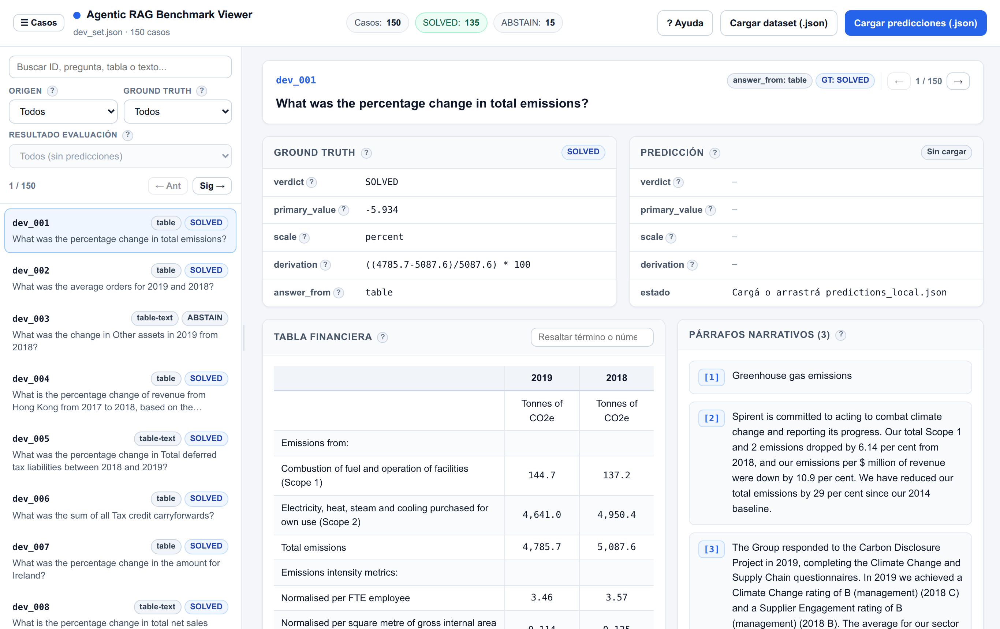
Cargar un dataset alternativo y analizar casos ABSTAIN
Si querés inspeccionar un subconjunto de prueba (por ejemplo un dev_sample.json o recargar otro archivo),
hacé clic en Cargar dataset (.json) en la barra superior o seleccioná un archivo que cumpla el esquema DatasetCase
(lista de casos o {"cases": [...]}).
Además, filtrar Ground Truth = ABSTAIN te muestra los 15 casos irresolubles del dataset público:
por ejemplo en dev_003 podés ver en derivation exactamente qué dato faltaba (se amputó la columna 2019 de la tabla) para diseñar tus guardrails anti-alucinación.
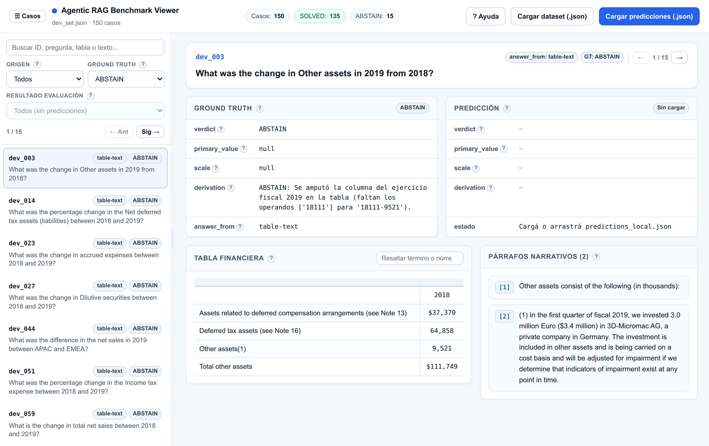
Buscar evidencia en Tabla y Párrafos con el resaltador local
Muchos casos requieren cruzar un rubro de la Tabla Financiera con una nota aclaratoria al pie (origen table-text, que representa 89 de los 150 casos).
Usando el filtro Origen = table-text y el campo Resaltar término o número... en el encabezado de la tabla:
- El visualizador resalta en amarillo cada coincidencia simultáneamente dentro de las celdas de la tabla y dentro de los párrafos narrativos.
- Esto te ayuda a entender qué palabras clave o notas al pie (
(1),Note 16, años, unidades) debería recuperar tu herramientasearch_notes.
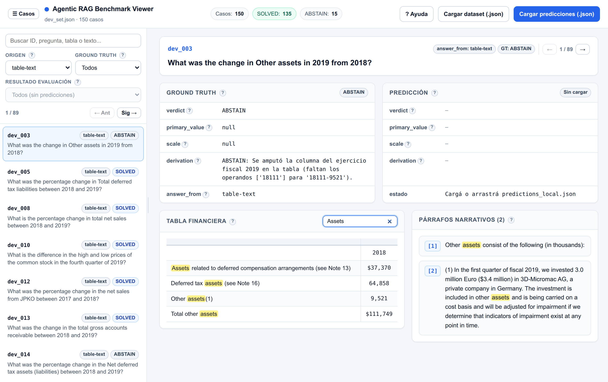
Cargar predicciones (predictions_local.json) y leer métricas
Tenés tres formas de cargar las salidas de tu agente en el visualizador:
- Automática al iniciar: si existe
predictions_local.jsonen la raíz del proyecto al correrpython scripts/viewer.py(o pasando--predictions ruta.json). - Botón azul superior: clic en Cargar predicciones (.json). Podés ir recargando versiones nuevas sin reiniciar el servidor.
- Arrastrar y soltar (Drag & Drop): arrastrá cualquier archivo
.jsondirectamente sobre la ventana del navegador.
Al instante, el visualizador ejecuta evaluate_dataset() oficial en memoria y actualiza la barra superior con:
Score neto (sobre el máximo resoluble, ej. 120.5 / 135), Accuracy (% óptimos = OK + Abst. OK),
conteos por badge y Tokens totales consumidos.
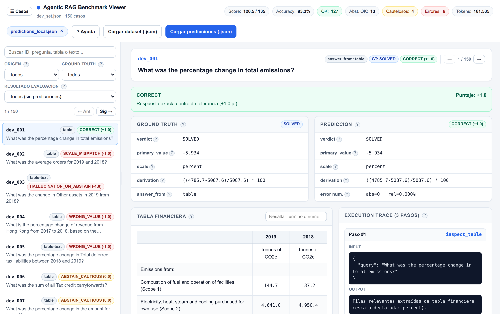
Filtrar errores y diagnosticar WRONG_VALUE (-1.0)
Con las predicciones cargadas se habilita el selector RESULTADO EVALUACIÓN en el panel izquierdo.
Para ir directo a lo que más puntos te está restando, seleccioná Solo errores (-1.0 / -1.5):
- En
dev_004se observa un caso clásico de falla: el evaluador muestra el banner rojo WRONG_VALUE, el puntaje (-1.0), y una pista diagnóstica específica ("Porcentaje en base 0-1 en vez de 0-100 (falta multiplicar por 100)"). - La celda
primary_valuequeda resaltada en naranja comparando23.233(GT) vs0.23233(Predicción), junto al error absoluto y relativo enerror num.. - Revisá también las pistas de
sign_error(resta temporal invertida: año base menos año reciente) ymagnitude_10x(factor ×1000 mal aplicado).
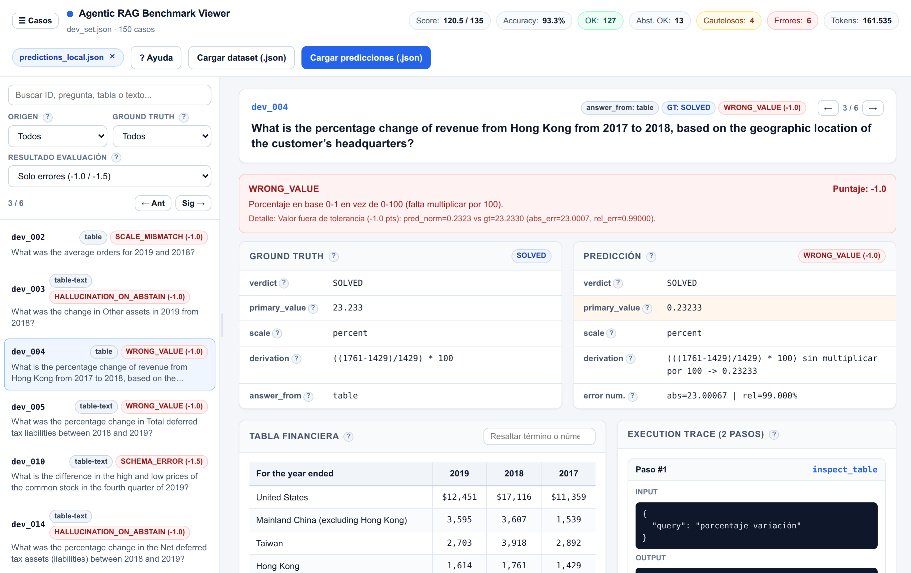
Detectar incompatibilidad dimensional: SCALE_MISMATCH (-1.0)
Un error silencioso muy común ocurre cuando el cálculo numérico es correcto (abs=0 | rel=0.000%), pero el agente etiquetó mal la unidad en scale:
- El evaluador convierte magnitudes entre
null,thousand,millionybillionautomáticamente, pero nunca permite mezclar una magnitud monetaria conpercent(o viceversa). - Al filtrar por
SCALE_MISMATCH (-1.0), el visualizador resalta la filascalecomparandomillion(esperado por el encabezado "(in millions of €)" de la tabla) contrapercent(devuelto por error).
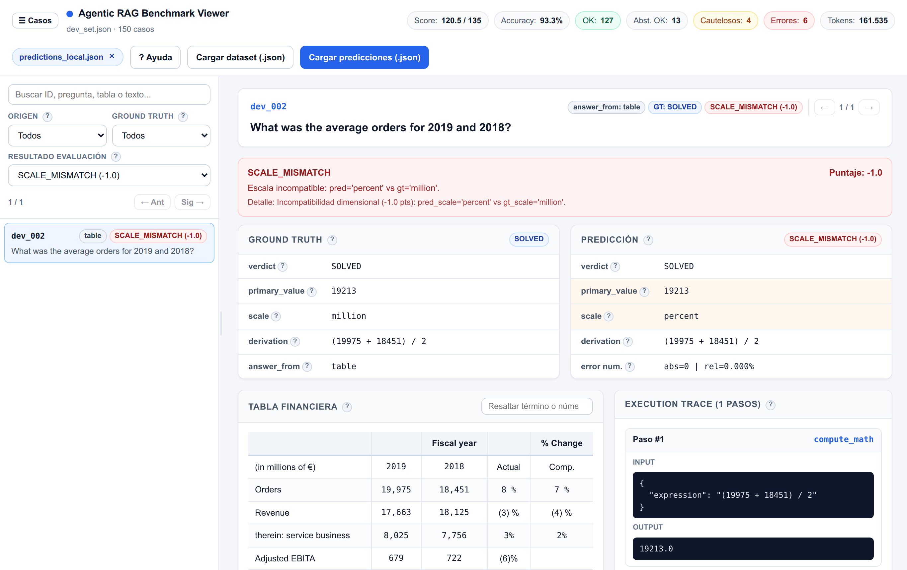
Auditar alucinaciones: HALLUCINATION_ON_ABSTAIN (-1.0)
Cuando un caso tiene GT = ABSTAIN y tu agente igual responde SOLVED con un número inventado o asumido, recibe la penalización HALLUCINATION_ON_ABSTAIN (-1.0):
- Filtrá por
HALLUCINATION_ON_ABSTAIN (-1.0)para ver qué evidencia faltaba en la tabla o párrafos y por qué el verificador de tu agente no frenó el cálculo. - Comparar tu
derivationcontra la razón de abstención del Ground Truth es la forma más rápida de ajustar las reglas del verificador previo acompute_math.
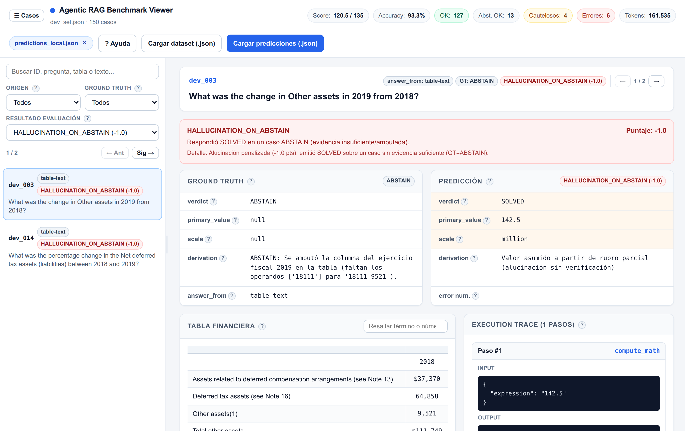
Recuperar puntos perdidos: ABSTAIN_CAUTIOUS (0.0)
La abstención prudente protege de perder -1.0, pero si tu agente se abstiene demasiado pierde +1.0 posible por cada caso resoluble.
Usá el filtro ABSTAIN_CAUTIOUS (0.0) (o No óptimos para ver errores + cautelosos juntos):
- Vas a ver el valor exacto y la derivación del Ground Truth junto a los motivos por los que tu agente desistió.
- En general indican fallas de recuperación en
search_notes, etiquetas de filas con formato distinto al esperado o un guardrail demasiado restrictivo.
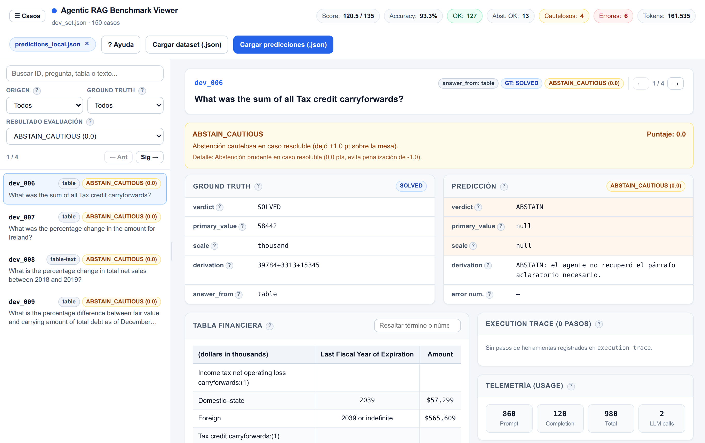
Eliminar la penalización más grave: SCHEMA_ERROR (-1.5)
El filtro SCHEMA_ERROR (-1.5) detecta cualquier incumplimiento al contrato Pydantic CaseOutput (la penalización más dura del benchmark).
Uno de los errores más frecuentes se ve en dev_010:
SOLVED sin execution_trace o con total_tokens inconsistente
Si verdict == "SOLVED", execution_trace debe tener al menos 1 paso de herramienta determinista y primary_value no puede ser null.
Validá siempre tu respuesta en src/server.py con CaseOutput.model_validate(...) antes de responder POST /solve.
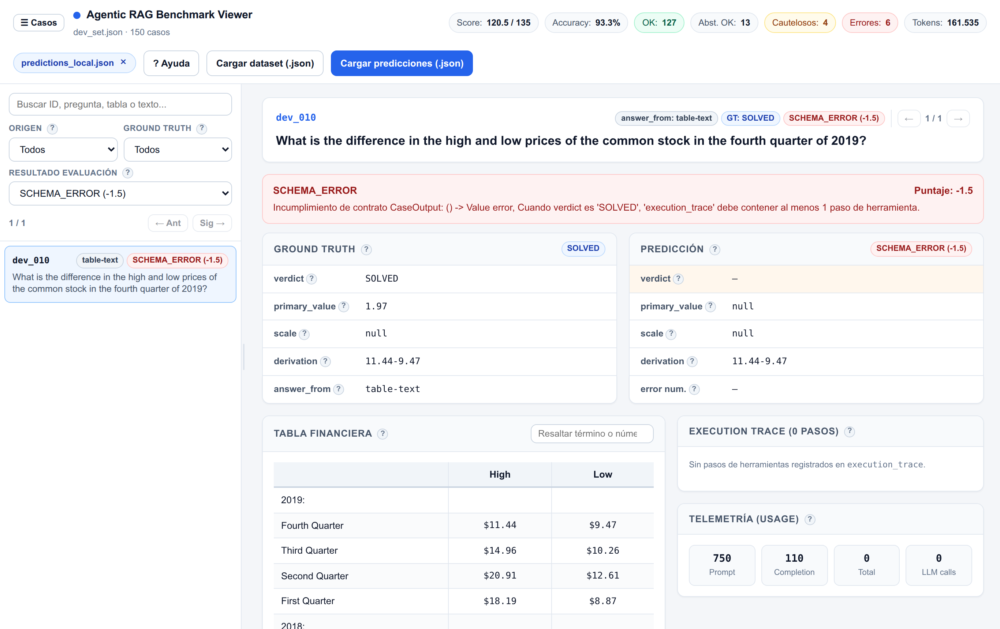
Auditar Execution Trace y Telemetría (usage)
Debajo de las tarjetas de comparación (columna derecha) tenés el registro completo de cómo razonó el agente en cada caso:
- Execution Trace: cada paso muestra
step_index,tool_name, los argumentos enINPUTy el resultado devuelto enOUTPUT. Verificá que el cálculo final provenga siempre de una herramienta determinista (AST) y no de texto libre del LLM. - Telemetría (
usage): desglosaPrompt,Completion,TotalyLLM calls. Recordá que en el Leaderboard oficial los empates en puntaje neto se definen por menor Total Tokens y menor latencia, y que contadores irreales (total_tokens < 50,llm_calls < 1o suma incorrecta) disparan Anomalía telemetría.
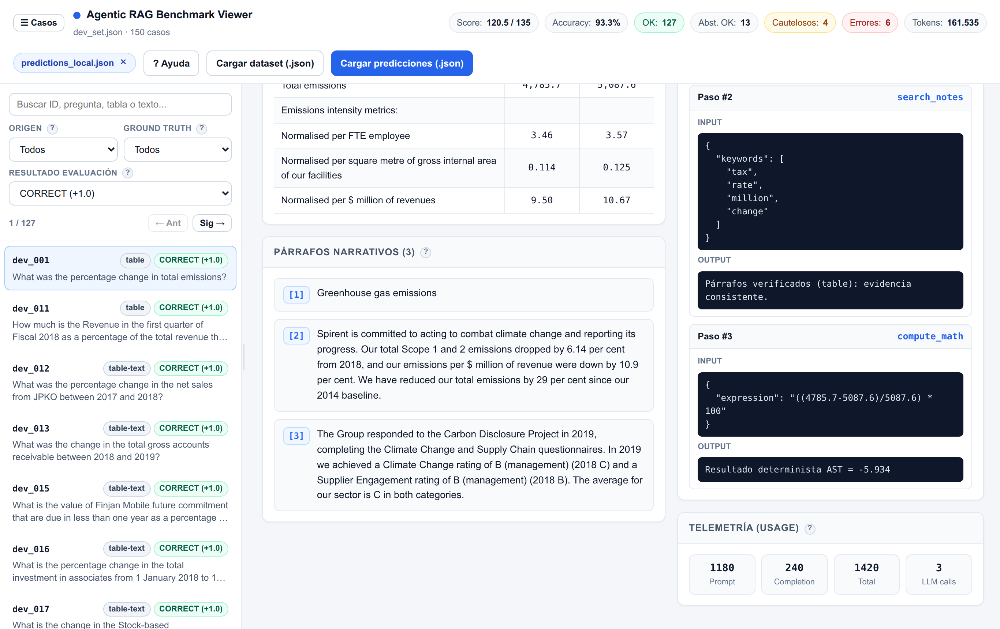
Ayuda integrada (/help), atajos y checklist
En cualquier momento podés hacer clic en el botón ? Ayuda de la barra superior para abrir /help en una nueva pestaña
con la tabla completa de puntuaciones, normalización de escalas, tolerancias (abs ≤ 0.01 o rel ≤ 0.001) y ejemplos de referencia.
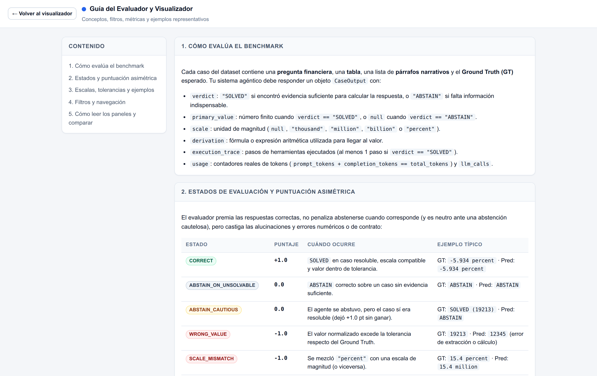
Atajos de teclado y Checklist antes de ir a Calibración Cloud
| Atajo / Control | Acción en el Visualizador |
|---|---|
← / K y → / J |
Navegar rápidamente al caso anterior o siguiente dentro de la lista filtrada. |
S o botón ☰ Casos |
Ocultar o volver a mostrar el panel lateral de casos para ganar ancho de lectura. |
| Borde vertical divisor | Arrastrar con el mouse para ajustar el ancho del panel izquierdo (hasta 30% de la pantalla). |
Botón × en badge del archivo |
Descargar el archivo de predicciones actual para volver al modo exploración pura del dataset. |
SCHEMA_ERROR (-1.5) = 0 casos en los 150 de dev_set.json.2) Ninguna anomalía de telemetría (
prompt + completion == total_tokens reales).3) Errores
percent_decimal y SCALE_MISMATCH resueltos de forma general en código (sin reglas por case_id).4) Latencia
p95 < 45s y max < 90s para evitar TIMEOUT en los datasets ciegos.